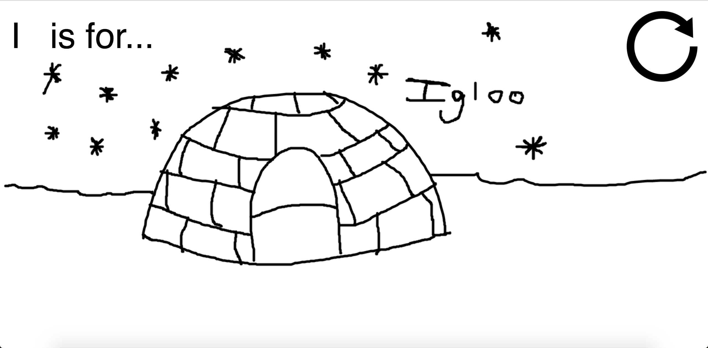

My project took influence from the New York based group Sesame Workshop who are the creators of the fictionally New York based Sesame Street! This meant embracing the idea of using media to educate children.
So for my project I created a piece to live on the web where kids would be able to become familiar with letters and practice associating those letters with words.
After spinning the letter wheel the user is presented a letter and a word that starts with that letter. That word is presented as an drawing that I did as a child.

Users can also save their work by clicking the download arrow. It was important for me to experiment with the drawings a user could create so I made a few of my own. I liked this one, I is for igloo!